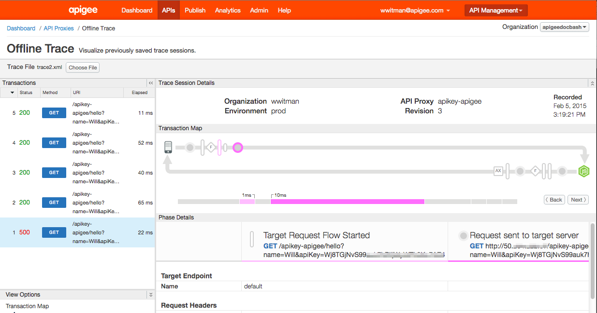
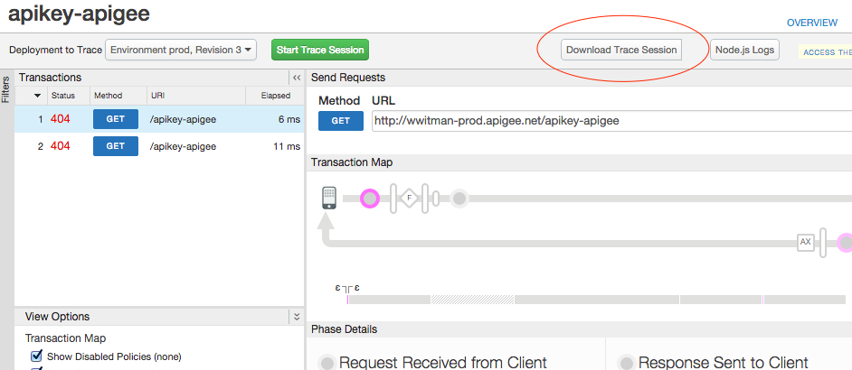
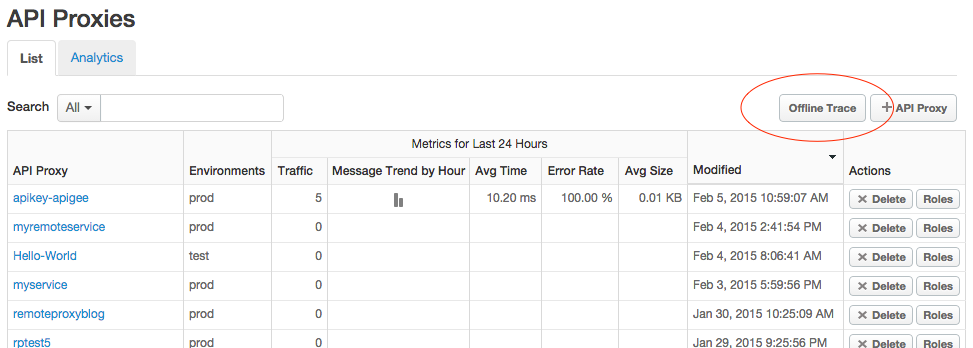
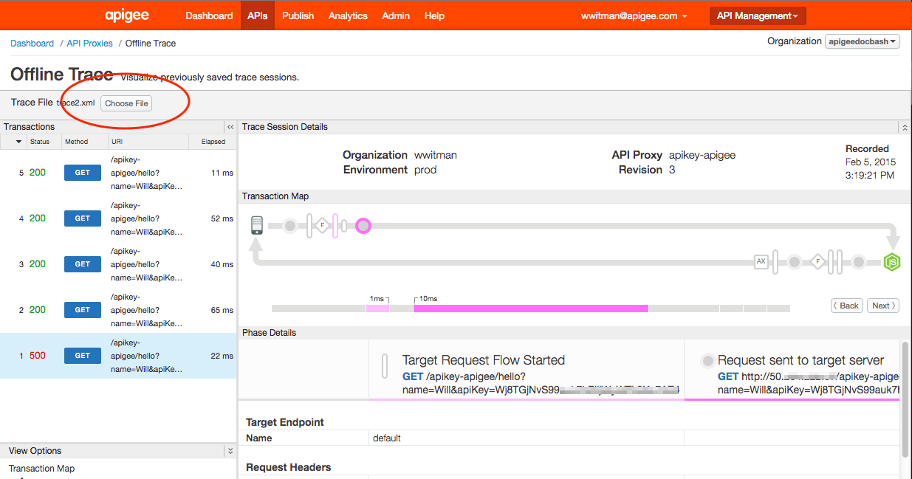

The Offline Trace tool lets you view and analyze trace sessions that were previously saved. A saved trace session is essentially a "recording" of a trace session, and can be useful for cases where troubleshooting and further analysis is required. The UI for the Offline Trace tool is similar to the "live" Trace tool. To learn about the Trace Tool UI and on saving trace sessions, see http://docs.apigee.com/node/14782.

To download a trace session:

The downloaded trace is stored in XML format.

In the Offline Trace tool, click Choose File and select a downloaded trace file from your system.
